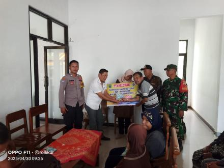
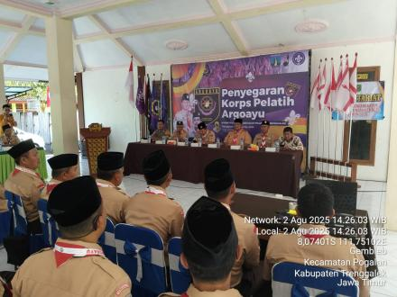
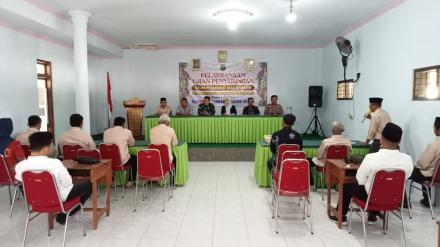
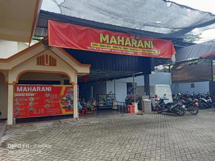

Pemerintahan
Penyaluran BLT-DD BULAN APRIL 2025
Pemdes Gembleb melaksanakan Penyaluran Bantuan Langsung Tunai bulan April 2025 untuk 12 KPM.
 Desa Gembleb
Desa Gembleb
Kecamatan Pogalan Kabupaten Trenggalek
Desa Gembleb merupakan desa yang terletak di kecamatan Pogalan, Trenggalek dengan potensi UMKM dan semangat gotong royong warganya

Pemdes Gembleb melaksanakan Penyaluran Bantuan Langsung Tunai bulan April 2025 untuk 12 KPM.

Kegiatan Penyegaran Pelatih Kwarcab Trenggalek di Lapangan Condro Geni Desa Gembleb.

Pelaksanaan ujian untuk formasi Kepala Dusun Kayujaran dan Dusun Suren berjalan lancar.
Layanan pengurusan KK, KTP, dan Akta Kelahiran.
Pengurusan Surat Domisili, izin usaha dan SKCK.

Bakpia buatan lokal warga Desa Gembleb yang terkenal.

Produk hasil kreativitas warga lokal.